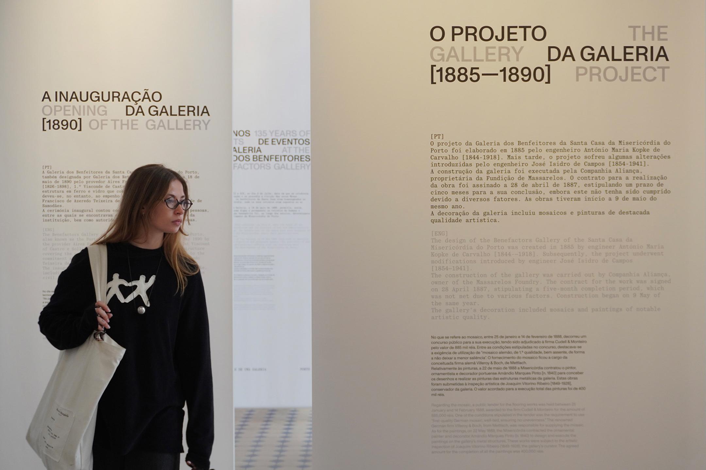
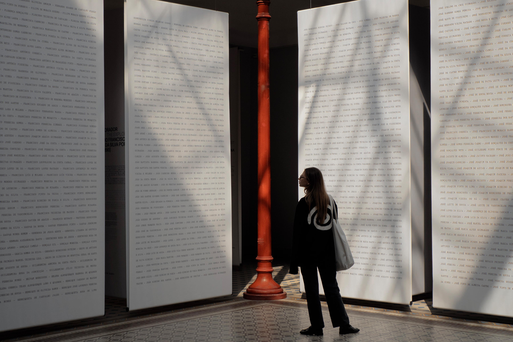
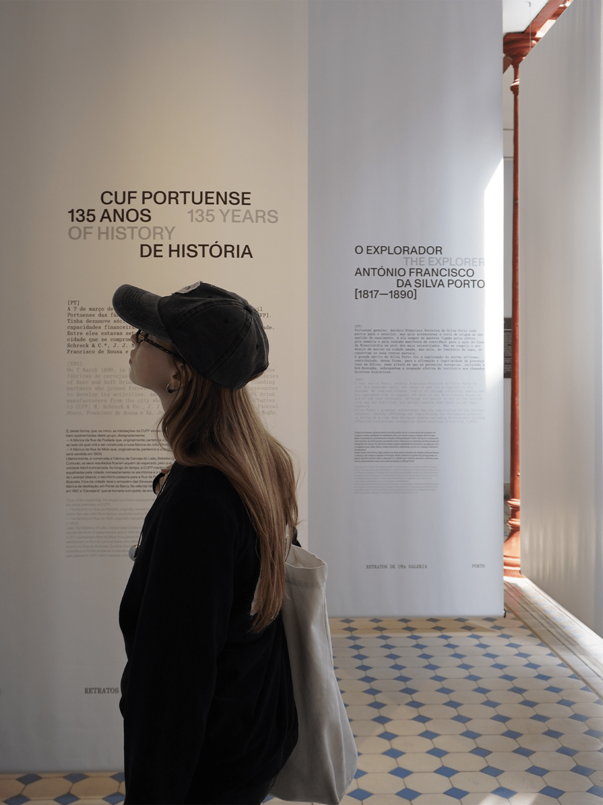
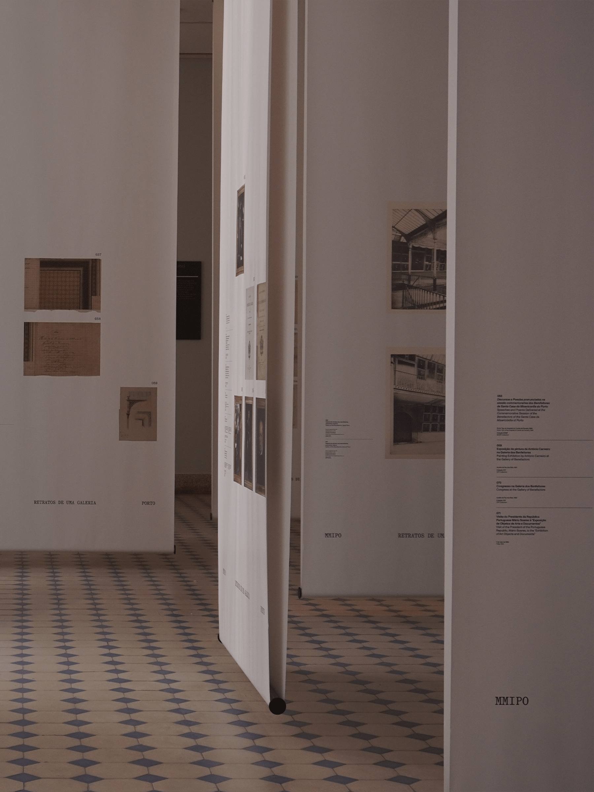
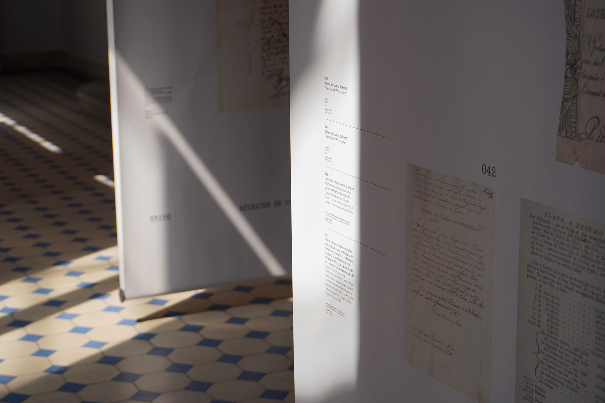
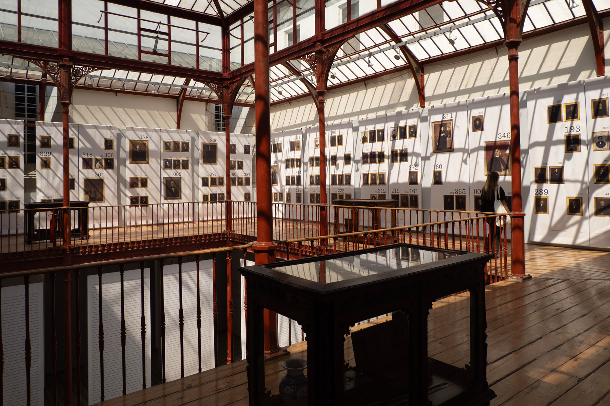
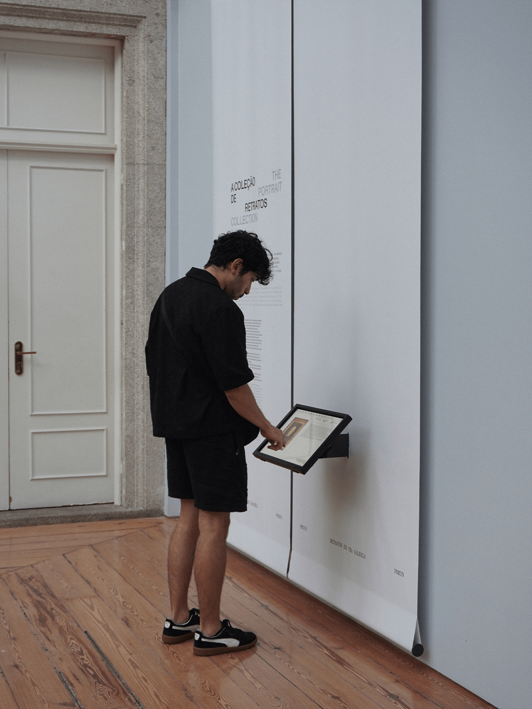
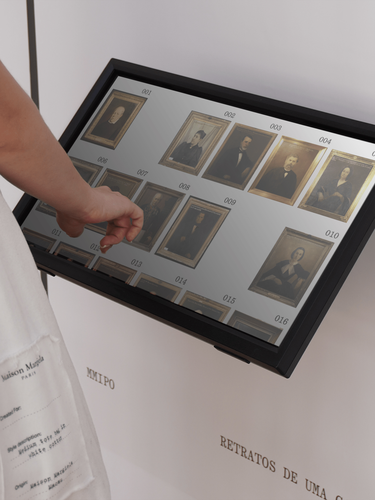

Work / Retratos de uma Galeria
Retratos de uma Galeria
@united by
(Front-end Development)
2025

"Retratos de Uma Galeria" invites visitors on a captivating journey through the legacy of the Santa Casa da Misericórdia do Porto, celebrating the men and women who, over more than five centuries, have shaped its history through acts of generosity and enduring contributions.
These benefactors embody a deep sense of social responsibility and an unwavering commitment to the city and its people. At the heart of this story lies the Benefactors’ Gallery, inaugurated 135 years ago and hailed as a landmark of iron architecture in Portugal, envisioned by the Count of Samodães as a meeting place for memory, institutional identity, and the spirit of the city.Today, the exhibition breathes new life into this historic space, scenographically evoking its original purpose while reinterpreting it in the light of present-day values and challenges.
Through an engaging display of stories, portraits, and objects from the Misericórdia’s collections, it offers a thoughtful reading of the institution’s human heritage. In line with the International Council of Museums’ new definition of a museum, "Retratos de Uma Galeria" positions the museum as a living space for learning, reflection, and exchange, a place to explore timeless themes such as philanthropy, human rights, heritage, and the enduring works of mercy.
Client
MMIPO
Museu da Misericórdia do Porto
Design
united by
Contractors
ESAG
Nuno Filipe Costa Lda.
Photos
united by






